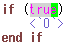

Kuin用 Neocomplcache-snippets-complete 設定ファイル
Last Modified: 2012/09/30 00:58:33.
概要
Kuin用のNeocomplcache-snippets-complete設定ファイルです。
※Kuinは、くいなちゃん(@kuina_tesso)が考案したプログラミング言語です。
ifと打って、スペニットを展開すると自動的にend ifまで入力されます。
|
【使用イメージ】  |
スペニットの展開直後は、図のtrueの位置にカーソルが来ます。
条件式の入力後、スペニットを展開するキーを入力し <`0`> の位置に来てコーディングを続けることができます。
ダウンロード
【自己責任でご利用下さい】
2012/08/08 公開
2012/08/27 修正
2012/08/28 修正
2012/09/23 修正
2012/09/30 修正
kuin.snip (for Neocomplcache-snippets-complete)
インストール手順
-
neocomplcache, neocomplcache-snippets-complete をインストール。
私はこのインストールで躓いたので、参考になったサイトを挙げておきます。
・http://d.hatena.ne.jp/AyeBee_TY/20110914/1315967356 -
kuin.vim (Kuin用 Vim設定ファイル)をインストール。
-
ダウンロードしたkuin.snipファイルを下記のフォルダにおいてください。
autoload\neocomplcache\sources\snippets_complete に置いてください。
以上です。
その他
不具合があれば連絡頂けると幸いです。
なお、下記のバージョンで動作確認を行いました。
Shougo-neocomplcache-ver.7.0-97-ga7d02b0.zip
Shougo-neocomplcache-snippets-complete-ver.2.0-16-g1367f60.zip
Emacsユーザーの方へ：
Kuin用 yasnippet 設定ファイルも公開しています。
よろしくお願いします。
Copyright (C) Tatt(タット) ---- Twitterアカウント @tatt61880